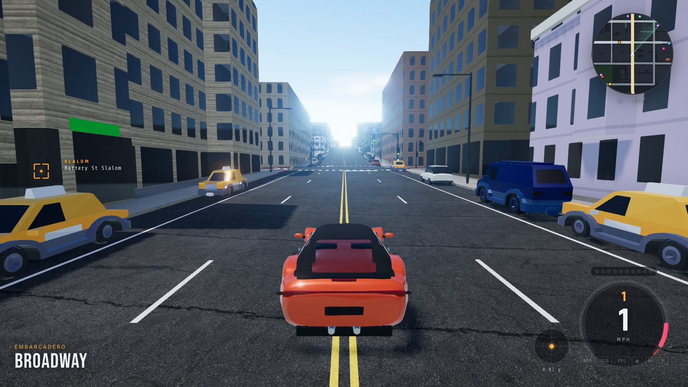
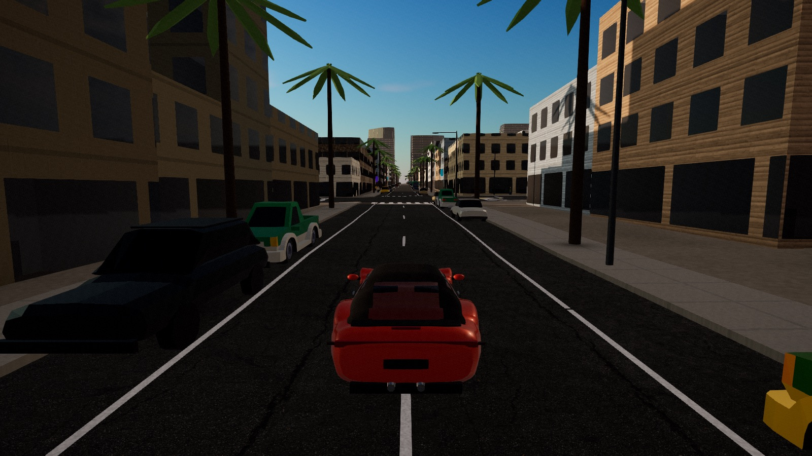

Free · in your browser · no account
CaliforniaDrive
Nine real California districts, built street by street from open map data. Fog over the Embarcadero, neon in downtown LA, snow on Highway 89. Pick a city and drive.
Desktop browser with WebGL2 · keyboard or gamepad
9real districts
15traffic vehicle types
5weather systems
9camera views
0accounts, trackers or downloads
Choose your city
Nine districts. Real streets.
Every road, building, park and tree comes from OpenStreetMap; every hill comes from USGS elevation data. Pick a pin, pick the light, and the game drops you straight there.
What's in the box
A whole state, in a browser tab
Open map data
Streets you can recognise
The Broadway and Stockton tunnels, the Embarcadero, Bunker Hill, the Gaslamp, the switchbacks above Emerald Bay. Roads, crosswalks, signals, piers and bridges are generated from OpenStreetMap, and the terrain is real elevation, so San Francisco's hills are as steep as they should be.
Living traffic
Taxis, trucks, and lights and sirens
Traffic follows real lanes, stops at signals and yields at junctions. Sedans and pickups share the road with taxis, box trucks, garbage trucks and fire engines. Some police cars and ambulances are on a call, with strobing lightbars and a siren that Doppler-shifts as they pass.
Weather and time
Karl the Fog included
Dawn, day, golden hour, dusk and night, plus clear, overcast, fog, rain and snow. Roads get wet, puddles reflect street lamps, and San Francisco's marine layer rolls in off the bay. Tyres lose grip in the wet, and snow at Tahoe really is slippery.

Cinematic HUD
A dashboard that boots up
Every drive starts with an instrument self-test: needle sweep, warning lights, radar iris. A sweeping radar tracks traffic, and a reticle locks onto the nearest time trial, drift zone or photo spot and tells you how far it is.
Things to do
Time trials, drift zones, postcards
Race your own ghost, link drifts in a beach lot, clock the speed trap, thread a slalom, or park it perfectly. Then switch to photo mode, set depth of field and focal length, and save a postcard of your drive.
Gallery
Captured in the game
Every image is a raw in-game frame (rendered in software, so real GPUs look sharper).
Controls
Pick up and drive
- Drive and steer
- Handbrake and drift
- Change camera
- Start an activity
- Photo mode
- Lights and horn
- Reset car
- Menu and settings
Gamepad
throttle and brake, steer, handbrake, camera. On-screen prompts switch to controller buttons as soon as you pick one up.
Every key can be remapped in the pause menu. Touch screens aren't supported yet, so play on a laptop or desktop.
Open and private
Built entirely from free and open sources
No accounts, no analytics, no cookies. Settings live in your tab and vanish when you close it. The game never talks to any server but its own.
Map data© OpenStreetMap contributors (ODbL)
ElevationAWS Terrain Tiles · USGS 3DEP
Vehicles, debris, glyphsKenney (CC0)
Textures and skyPoly Haven (CC0)
FontsBebas Neue, Rajdhani, Share Tech Mono, Inter (OFL)
Rendering and physicsthree.js (MIT) · Rapier (Apache-2.0)
SoundEvery engine note, siren and song is synthesized in code
Source codegithub.com/roszhan2684/california-drive (MIT)
